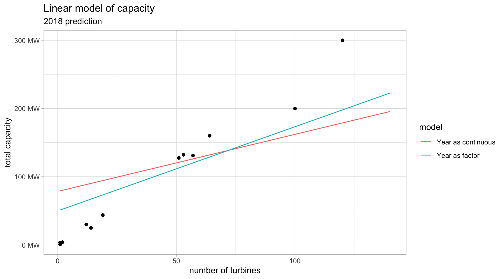
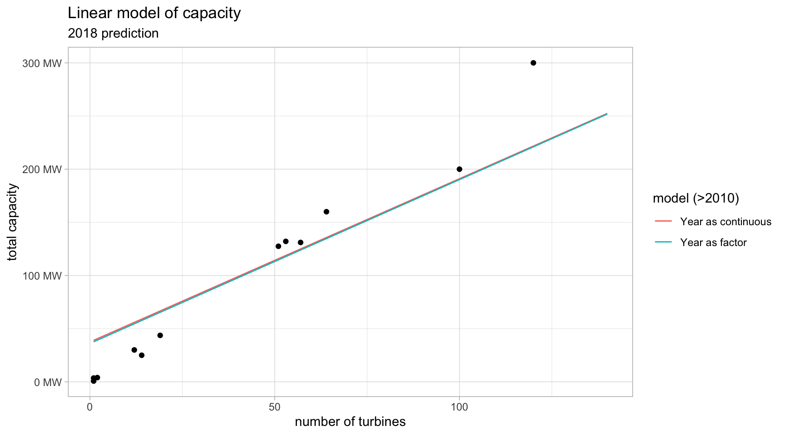
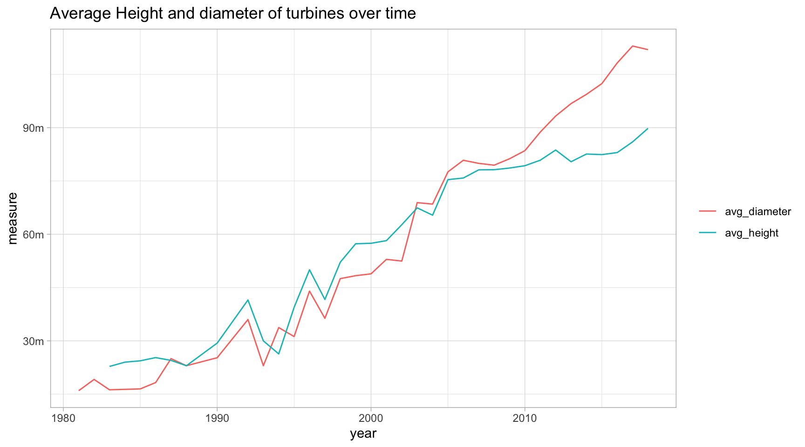

Week 32 - 2018
US Wind Turbine Data
Tidy Tuesday Week 32 is wind turbine location and characteristic data from across the USA.
A data dictionary can be found here.
Code Walkthrough
For this weeks dataset, I decided to document my data exploration in an R markdown document.
Exploring the data
library(tidyverse)
library(ggplot2)
library(scales)
library(xtable)
theme_set(theme_light()) # Set ggplot theme globallyHaving viewed the data dictionary, we see that missing values take three different forms, “n/a”, “-9999”, and “missing”. These can be used when reading in the data.
raw_data <- read_csv("https://raw.githubusercontent.com/rfordatascience/tidytuesday/master/data/2018/2018-11-06/us_wind.csv", na = c("n/a", "-9999", "missing"))Project Characteristics
The data contains 58185 data points and 24 variables. There are 1479 different projects in 45 states.
Each project has characteristics, such as total capacity (MW), number of turbines and the year the project became operational.
An intuitive relationship is the number of turbines and the capacity of a project.
project_data <- raw_data %>%
group_by(p_name, p_year, p_tnum, p_cap, t_state) %>%
summarise(avg_cap = mean(t_cap, na.rm = T),
avg_height = mean(t_hh, na.rm = T),
avg_diameter = mean(t_rd, na.rm = T)) %>%
ungroup()
project_data %>%
ggplot(aes(p_tnum, p_cap, colour = t_state)) +
geom_point() +
guides(colour = FALSE) + # too many states to display in a legend
scale_y_continuous(labels = number_format(suffix = " MW")) +
labs(x = "number of turbines", y = "project capacity", title = "Capacity vs No. Turbines")
The number of turbines can be used to determine the size of the points in a graph. This is a good way to include extra information in a graph. The project capacity, year, number of turbines and state are all included in the graph below, albeit the legend of which state is which colour is not displayed.
project_data %>%
ggplot(aes(p_year, p_cap, colour = t_state, size = p_tnum)) +
geom_point() +
guides(colour = FALSE, size = guide_legend("# turbines", reverse = T)) +
scale_y_continuous(labels = number_format(suffix = " MW")) +
labs(x = "year", y = "project capacity", title = "Capacity across time")
year_data <- raw_data %>%
group_by(p_year) %>%
summarise(avg_cap = mean(t_cap, na.rm = T),
avg_height = mean(t_hh, na.rm = T),
avg_diameter = mean(t_rd, na.rm = T),
avg_tnum = mean(p_tnum, na.rm = T)) %>%
ungroup()
year_data %>%
ggplot(aes(p_year, avg_cap, size = avg_tnum)) +
geom_point() +
guides(size = guide_legend("Avg # turbines", reverse = T)) +
scale_y_continuous(labels = number_format(suffix = " MW")) +
labs(x = "year", y = "average project capacity", title = "Capacity across time")
Modelling project capacity
Collinearity
# model 1
project_lm <- lm(p_cap ~ p_tnum + avg_height + avg_diameter + p_year, data = project_data)
project_lm$coefficients## (Intercept) p_tnum avg_height avg_diameter p_year
## -3604.9134736 1.3401547 -0.1460557 0.7294804 1.7774508The height and diameter of turbines are going to be highly correlated, this is a classic example of collinearity. The Pearson correlation between average height and average diameter is 0.8643.
Year as a continuous variable?
Height is removed, we now concentrate on the year variable. This can be thought of as a continuous variable or as a factor.
# model 2 (year continous)
project_lm2 <- lm(p_cap ~ p_tnum + avg_diameter + p_year, data = project_data)
project_lm2$coefficients## (Intercept) p_tnum avg_diameter p_year
## -3436.0610608 0.8368185 0.8999446 1.6908112 # model 3 (year factor)
project_lm3 <- lm(p_cap ~ p_tnum + avg_diameter + as.factor(p_year), data = project_data)
# predictions
avg_diameter <- project_data %>%
filter(p_year == 2018) %>%
select(avg_diameter) %>%
colMeans(na.rm = T)
new_data_predicted <- data_frame(model = "Year as continuous", p_tnum = 1:140, avg_diameter, p_year = 2018) %>%
mutate(predicted_cap = predict(project_lm2, newdata = .)) %>%
bind_rows(
data_frame(model = "Year as factor", p_tnum = 1:140, avg_diameter, p_year = 2018) %>%
mutate(predicted_cap = predict(project_lm3, newdata = .))
)
ggplot() +
geom_point(aes(x = p_tnum, y = p_cap), data = project_data %>% filter(p_year > 2017, !is.na(p_cap))) +
geom_line(aes(x = p_tnum, y = predicted_cap, colour = model), data = new_data_predicted) +
labs(x = "number of turbines", y = "total capacity",
title = "Linear model of capacity", subtitle = "2018 prediction") +
scale_y_continuous(label = number_format(suffix = " MW"))
It’s worth fitting the model with only modern data. Using data from the year 2000 on fits very similar models for both continuous and factor models. In this case it’s better to use year as a continuous variable because it reduces the number of parameters in the model.

data_frame(Model = c("Year (cont)", "Year (fact)", "Modern Year (cont)", "Modern Year (fact)"),
Rsq = c(
cor(project_lm2$model$p_cap, project_lm2$fitted.values)^2,
cor(project_lm3$model$p_cap, project_lm3$fitted.values)^2,
cor(project_lm2_2$model$p_cap, project_lm2_2$fitted.values)^2,
cor(project_lm3_2$model$p_cap, project_lm3_2$fitted.values)^2),
RMSE = c(
sqrt(mean(project_lm2$residuals^2)),
sqrt(mean(project_lm3$residuals^2)),
sqrt(mean(project_lm2_2$residuals^2)),
sqrt(mean(project_lm3_2$residuals^2))
)
) %>% xtable(digits = 4) %>%
print(type = "html", include.rownames = FALSE, html.table.attributes = list('align="center", border=1, width=40%'))| Model | Rsq | RMSE |
|---|---|---|
| Year (cont) | 0.5976 | 47.4917 |
| Year (fact) | 0.7718 | 35.7644 |
| Modern Year (cont) | 0.8823 | 26.1147 |
| Modern Year (fact) | 0.8861 | 25.6968 |
Turbine Characteristics
The data also contains information on different turbines, manufacturer, model, etc. The graphs below show the height and diameter versus capacity. The points are coloured by year, and done in 2 different ways to illustrate how a variable like year can be displayed as discrete or continuous.
turbine_data <- raw_data %>%
group_by(t_manu, t_model, t_cap, t_hh, t_rd) %>%
summarise(year = min(p_year, na.rm = T)) %>%
filter(!is.infinite(year)) %>%
ungroup()
turbine_data %>% ggplot(aes(t_cap, t_hh, colour = as.factor(year))) +
geom_point() +
scale_x_continuous(labels = number_format(suffix = " kW", big.mark = "")) +
scale_y_continuous(labels = number_format(suffix = " m")) +
labs(x = "turbine capacity", y = "turbine hub height", title = "Capacity vs Height", colour = "Year")
turbine_data %>% ggplot(aes(t_cap, t_rd, colour = year)) +
geom_point() +
scale_x_continuous(labels = number_format(suffix = " kW", big.mark = "")) +
scale_y_continuous(labels = number_format(suffix = " m")) +
labs(x = "turbine capacity", y = "turbine rotor diameter", title = "Capacity vs Rotor Diameter", colour = "Year")
Average height and diameter over time
year_data %>%
gather(variable, measure, -p_year) %>%
filter(variable %in% c("avg_height", "avg_diameter")) %>%
ggplot(aes(p_year, measure, colour = variable)) +
geom_line() +
scale_y_continuous(labels = number_format(suffix = "m")) +
labs(x = "year", y = "measure", title = "Average Height and diameter of turbines over time", colour = NULL)
Interactive plots
The plotly package is a great way to create interactive graphs. The ggplotly function will create an interactive version of a ggplot.
library(plotly)
plotly_1 <- project_data %>%
ggplot(aes(avg_cap, avg_height, colour = t_state, size = p_tnum,
text = paste0("Project: ", p_name,
"<br>Year: ", p_year,
"<br>State: ", t_state,
"<br>Project Capacity: ", p_cap," MW",
"<br>No. of Turbines: ", p_tnum))) +
geom_point() +
scale_x_continuous(labels = number_format(suffix = " kW")) +
scale_y_continuous(labels = number_format(suffix = " m")) +
labs(x = "average turbine capacity", y = "average turbine height",
title = "Project's Turbine Capacity vs Height",
colour = "State", size = NULL)Double click on any state in the legend to display only the data from that state.
ggplotly(plotly_1, tooltip = "text")A 3d interactive plot can be useful, the user can explore the data themselves.
turbine_3d <- plot_ly(turbine_data %>% filter(year > 2010), # too many observations without filter
x = ~t_hh, y = ~t_rd, z = ~t_cap, color = ~year,
type = "scatter3d", size = 0.5, hoverinfo = 'text',
text = ~paste("</br> capacity:", t_cap, # this controls the information displayed when
"</br> height:", t_hh, # hoovering over an observation
"</br> diameter:", t_rd,
"</br> year:", year)) %>%
layout(title = "Turbine heights and diameters versus capacity",
scene = list(camera = list(eye = list(x = 1.8,y = 0.3,z = 0.28),
center = list(x = 0, y = 0, z = -0.2)), # set the default camera view
xaxis = list(title = "height", ticksuffix = " m"), # add axis title and suffix to tick labels
yaxis = list(title = "diameter", ticksuffix = " m"),
zaxis = list(title = "capacity", ticksuffix = " kW")), showlegend = FALSE)Click and drag on the plot below to move the axes.
Location of turbines
Geographical data for each turbine is provided. This can be used to explore the location of wind farms.
raw_data %>%
count(State = t_state) %>%
arrange(desc(n)) %>%
head(10) %>%
xtable() %>%
print(type = "html", include.rownames = FALSE,
html.table.attributes = list('align="center", border=0'))| State | n |
|---|---|
| TX | 13232 |
| CA | 9037 |
| IA | 4280 |
| OK | 3821 |
| KS | 2898 |
| IL | 2602 |
| MN | 2547 |
| CO | 2278 |
| OR | 1868 |
| WA | 1744 |
Plot of locations
library(maps)
states = map_data("state") # data for plotting US map
ggplot() +
geom_polygon(data = states,
aes(x = long, y = lat, group=group), fill = NA, color = "black") +
geom_point(data = raw_data,
aes(x = xlong, y = ylat), color = "blue3", size = 0.7) +
coord_fixed(1.3) + xlim(range(states$long)) + ylim(range(states$lat)) + theme_void()
ggplot() +
geom_polygon(data = states,
aes(x = long, y = lat, group = group), fill = NA, color = "black") +
stat_density2d(data = raw_data,
aes(x = xlong, y = ylat, fill = ..level..), geom = "polygon") + # add density to map
coord_fixed(1.3) + xlim(range(states$long)) + ylim(range(states$lat)) + theme_void()
Animation
gganimate is a package which can be used to create animations in R. It’s quite simple to use; it only requires a few extra functions on top of a standard ggplot to turn it into an animation.
library(gganimate)
animation_data <- raw_data %>% filter(!is.na(p_year))
location_animation <- ggplot() +
geom_polygon(data = states,
aes(x = long, y = lat, group = group),
fill = NA, color = "black") + # add outline of US and states
geom_point(data = animation_data,
aes(x = xlong, y = ylat),
color = "blue3", size = 0.7) + # turbine location plot
coord_fixed(1.3) +
xlim(range(states$long)) +
ylim(range(states$lat)) +
theme_void() +
labs(title = "Location of wind turbines in the USA",
subtitle = 'Year: {frame_time}') +
# animations settings, shdow_mark sticks points onto the map
transition_time(p_year) +
shadow_mark(colour = 'blue')
# create animation
animate(location_animation,
nframes = length(unique(raw_data$p_year)),
fps = 1,
width = 800, height = 800)
Other animation
Having looked a gganimate, I spotted this tweet from @drob where he makes a very similar animation but with a few tweaks. It’s interesting to see a similar but alternative approach.
Here's the graph I was aiming for in yesterday's #tidytuesday screencast. This kind of data is a great use case for gganimate https://t.co/3qsndkMFZn #rstats pic.twitter.com/6LLfiEdUqs
— David Robinson (@drob) November 7, 2018
us_wind_processed <- raw_data %>%
filter(!t_state %in% c("AK", "HI", "GU", "PR"))
wind_projects <- us_wind_processed %>%
group_by(p_name, t_state) %>%
summarize(year = min(p_year, na.rm = TRUE),
turbines = n(),
total_capacity = sum(t_cap),
lon = mean(xlong),
lat = mean(ylat),
lon_sd = sd(xlong),
lat_sd = sd(ylat)) %>%
ungroup()
wind_projects %>%
filter(!is.na(year), !is.infinite(year)) %>%
crossing(time = 1981:2018) %>%
filter(year <= time) %>%
ggplot(aes(lon, lat, size = turbines, color = year)) +
borders("state") +
geom_point() +
transition_manual(time) +
scale_color_continuous(guide = FALSE) +
labs(title = "Locations of wind turbine projects in continental US (1981-2018)") +
coord_map() +
theme_void()